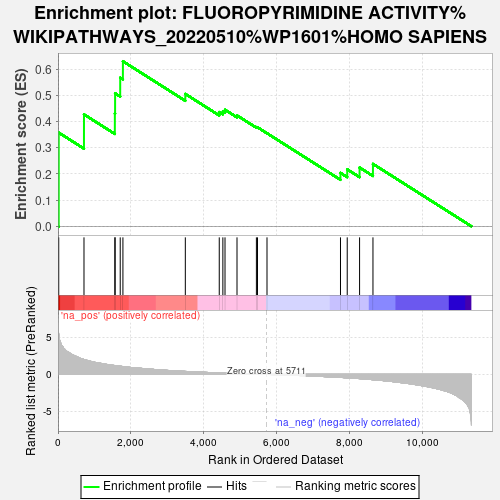

| | | Dataset | deg_ms |
| Phenotype | NoPhenotypeAvailable |
| Upregulated in class | na_pos |
| GeneSet | FLUOROPYRIMIDINE ACTIVITY%WIKIPATHWAYS_20220510%WP1601%HOMO SAPIENS |
| Enrichment Score (ES) | 0.6306262 |
| Normalized Enrichment Score (NES) | 1.6352966 |
| Nominal p-value | 0.023041476 |
| FDR q-value | 0.91000986 |
| FWER p-Value | 1.0 |
Table: GSEA Results Summary

Fig 1: Enrichment plot: FLUOROPYRIMIDINE ACTIVITY%WIKIPATHWAYS_20220510%WP1601%HOMO SAPIENS
Profile of the Running ES Score & Positions of GeneSet Members on the Rank Ordered List
| SYMBOL | RANK IN GENE LIST | RANK METRIC SCORE | RUNNING ES | CORE ENRICHMENT | | 1 | XRCC3 | 20 | 5.535 | 0.3578 | Yes |
| 2 | DHFR | 713 | 2.014 | 0.4276 | Yes |
| 3 | ERCC2 | 1560 | 1.200 | 0.4309 | Yes |
| 4 | TDG | 1567 | 1.198 | 0.5082 | Yes |
| 5 | ABCC5 | 1707 | 1.108 | 0.5679 | Yes |
| 6 | SMUG1 | 1781 | 1.065 | 0.6306 | Yes |
| 7 | UCK1 | 3493 | 0.404 | 0.5058 | No |
| 8 | TYMP | 4424 | 0.198 | 0.4365 | No |
| 9 | RRM1 | 4523 | 0.178 | 0.4394 | No |
| 10 | ABCG2 | 4582 | 0.169 | 0.4453 | No |
| 11 | UCK2 | 4911 | 0.113 | 0.4236 | No |
| 12 | CES2 | 5443 | 0.034 | 0.3790 | No |
| 13 | FPGS | 5473 | 0.029 | 0.3783 | No |
| 14 | UMPS | 5734 | -0.003 | 0.3555 | No |
| 15 | SLC29A1 | 7750 | -0.407 | 0.2040 | No |
| 16 | TK1 | 7935 | -0.458 | 0.2175 | No |
| 17 | DPYD | 8274 | -0.567 | 0.2245 | No |
| 18 | ABCC3 | 8641 | -0.711 | 0.2384 | No |
Table: GSEA details [plain text format]
Fig 2: FLUOROPYRIMIDINE ACTIVITY%WIKIPATHWAYS_20220510%WP1601%HOMO SAPIENS: Random ES distribution
Gene set null distribution of ES for FLUOROPYRIMIDINE ACTIVITY%WIKIPATHWAYS_20220510%WP1601%HOMO SAPIENS